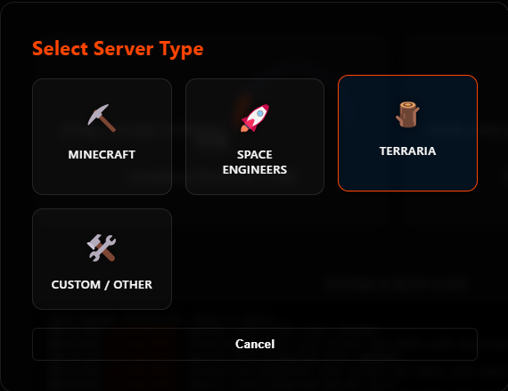
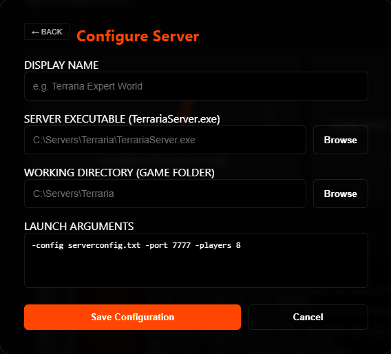

Terraria
Direct Console Integration
Terraria runs as a native Windows executable. RSM utilizes a "Direct Console" approach, piping the standard input and output streams directly into the dashboard. This allows for real-time interaction with the server's startup prompts and world-management commands without needing external log files or APIs.
⚠️ Pre-Configuration Steps
Before adding the server to RSM, ensure the host environment is prepared for the XNA Framework.
- System Dependencies: Terraria requires the Microsoft XNA Framework Redistributable 4.0. If the
redistfolder is missing from your server files, download it directly from Microsoft: XNA 4.0 Redistributable Refresh. - World Generation: While RSM can handle the startup prompts, it is recommended to run
TerrariaServer.exemanually once to generate your initial world and set the max players/port settings. - Config Files: For a fully automated "One-Click" startup, create a
serverconfig.txtfile in your server directory. This allows the server to skip interactive questions and go straight to "Online" status. - File Location: Identify the following paths for the RSM Wizard:
- Server EXE: Usually
TerrariaServer.exe. - Working Directory: The root folder containing your server files and config.
- Server EXE: Usually
🛠️ Troubleshooting Dependency Errors
If the server fails to launch or the console displays a FileNotFoundException immediately after starting, follow these steps:
Missing XNA Framework
The most common error is a missing Microsoft.Xna.Framework assembly.
* Fix: Run the XNA 4.0 Refresh installer linked above.
* Note: You may also need the .NET Framework 3.5 Runtime enabled on your system for older versions of the Terraria server.
Legacy Component Support (DirectPlay)
On Windows Server or fresh Windows 10/11 installs, legacy network components may be disabled by default. 1. Open Control Panel > Programs and Features. 2. Select Turn Windows features on or off. 3. Expand Legacy Components and check DirectPlay. 4. Click OK and restart the server through RSM.
📂 Required Pathing
-
Executable Path
Points directly to the Terraria binary.
...\Terraria\TerrariaServer.exe -
Working Directory
The folder where your config files and world data live.
C:\Servers\Terraria -
Direct Console
Standard Out. Unlike SE, Terraria does not require a Log Path. RSM captures the window output directly.
-
Admin Privileges
Recommended. Required if the server needs to automatically open ports via UPnP or bind to protected network sockets.
{kind=link}
{kind=link}
{kind=link}
{kind=link}
⚙️ Startup Arguments
When using the Terraria preset in the RSM Wizard, these flags are commonly used to automate the launch process:
| Flag | Function |
|---|---|
-config serverconfig.txt |
Loads server settings from a text file to skip manual prompts. |
-port 7777 |
Specifies the listening port (Default is 7777). |
-players 8 |
Sets the maximum number of simultaneous players. |
-world "..." |
Points to a specific .wld file to load automatically. |
🌳 Adding to RSM
- Open Manager: Click Add Server and select the Terraria card.

{kind=link}
- Fill Fields: Fill in the fields with the appropriate paths and settings for your Terraria server. Replace the "serverconfig.txt" argument with your actual config file if you created one in the pre-configuration steps, or just leave it alone for the default server set-up. Rsm will automatically suggest common Terraria arguments.

{kind=link}
- Save: Click Save Server. Your server will appear in the sidebar with the icon.
- Launch: Select the server and hit Start. You can respond to any startup prompts directly through the RSM Console Input.
Note: If the console stays blank but the CPU gauge is active, ensure you are not running the server in a "GUI" mode that detaches the process from the terminal.